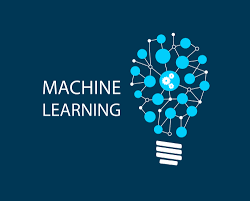
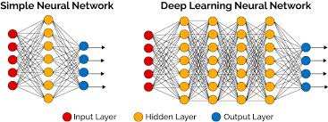
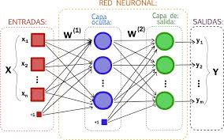
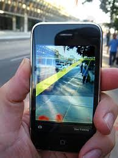
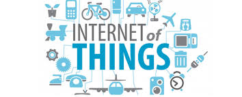
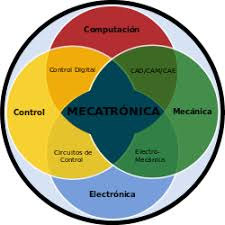
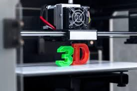

HTML 5
HTML5 (HyperText Markup Language, versión 5) es la quinta revisión importante del
lenguaje básico de la World Wide Web,
HTML. HTML5 especifica dos variantes de sintaxis para HTML: una «clásica», HTML (text/html), conocida como HTML5, y una
variante XHTML conocida como sintaxis XHTML5 que deberá servirse con sintaxis XML (application/xhtml+xml).
Esta es la primera vez que HTML y XHTML se han desarrollado en paralelo. La versión definitiva de la quinta revisión
del estándar se publicó en octubre de 2014.
Al no ser reconocido en viejas versiones de navegadores por sus nuevas etiquetas, se recomienda al usuario común actualizar
su navegador a la versión más nueva, para poder disfrutar de todo el potencial que provee HTML5.
Novedades
• Etiquetas para manejar grandes conjuntos de datos: Datagrid, Details, Menu y Command. Permiten generar tablas dinámicas
que pueden filtrar, ordenar y ocultar contenido en cliente.
• Mejoras en los formularios. Nuevos tipos de datos (eMail, number, url, datetime …) y facilidades para validar el contenido
sin Javascript.

CSS3
CSS3 es la última evolución del lenguaje de las Hojas de Estilo en Cascada (Cascading Style Sheets), y pretende ampliar la versión CSS2.
Trae consigo muchas novedades altamente esperadas,
como las esquinas redondeadas, sombras, gradientes , transiciones o animaciones, y nuevos layouts como multi-columnas, cajas flexibles
o maquetas de diseño en cuadrícula (grid layouts).
Las partes experimentales son particulares para cada navegador y deberían ser evitadas en entornos de producción, o usadas con extrema
precaución, ya que tanto la sintaxis como la semántica pueden cambiar en el futuro.
Los módulos y el proceso de estandarización
El Nivel 2 de CSS necesitó 9 años, desde Agosto de 2002 hasta Junio de 2011, para alcanzar el estado de Recomendación. Esto fué debido
al hecho de que algunas características secundarias fueron retiradas de las especificaciones globales, con el fin de acelerar la normalización
de las características no problemáticas.
El Grupo de Trabajo CSS de la W3C, en una decisión referida
como la doctrina Beijing dividió CSS en componentes más pequeños llamados módulos
cada uno de estos módulos es ahora una parte independiente del lenguaje y se dirije a la estandarización a su propio
ritmo mientras algunos módulos
son ya recomendados de la W3C, otros todavía son borradores iniciales tambíen se añaden nuevos módulos cuando se identifican nuevas necesidades.
JAVASCRIPT
JavaScript (abreviado comúnmente JS) es un lenguaje de programación interpretado,
dialecto del estándar ECMAScript. Se define como orientado
a objetos,
basado en prototipos, imperativo, débilmente tipado y dinámico.
Se utiliza principalmente en su forma del lado del cliente (client-side), implementado como parte de un navegador web permitiendo mejoras en la interfaz
de usuario y páginas web dinámicas4 aunque existe una forma de JavaScript del lado del servidor(Server-side JavaScript o SSJS).
Su uso en aplicaciones externas a la web, por ejemplo en documentos PDF, aplicaciones de escritorio (mayoritariamente widgets )
es también significativo.
JavaScript se diseñó con una sintaxis similar a C, aunque adopta nombres y convenciones del lenguaje de programación Java. Sin embargo, Java y JavaScript
tienen semánticas y propósitos diferentes.
PROGRESSIVE WEB APPS
Progressive web apps (o aplicaciones web progresivas), es un término que se da a una nueva generación de aplicaciones que incrementan su funcionalidad,
conforme las capacidades del dispositivo en el que se ejecutan, incrementan, de ahí la palabra progresiva.
El nombre web, hace referencia a que se construyen utilizando estándares de desarrollo web, algunos ya conocidos como HTML, CSS y javaScript; y una nueva
generación de APIs de javaScript. App es porque las Progressive Web Apps se comportan como aplicaciones web nativas, pero usan tecnologías web.
Una nueva generación de estándares web, quiera completar la brecha, algo que me gusta y entusiasma, es que los estándares y los navegadores,
han progresado tanto, que ya no buscamos crear aplicaciones nativas, falsas, con tecnologías web; lo que buscamos ahora es crear
aplicaciones web,
que por sí mismas, cubran las brechas de experiencia que las aplicaciones nativas tenían de ventaja.
Son aplicaciones web, no aplicaciones nativas, pero usar cualquiera de ellas es (o debería ser) indiferente para el usuario.
INTELIGENCIA ARTIFICIAL (IA)
La inteligencia artificial ( IA ), también llamada inteligencia computacional, es la inteligencia exhibida por máquinas.
En ciencias de la computación, una máquina «inteligente» ideal es un agente racional flexible que percibe su entorno y lleva a cabo acciones que
maximicen sus posibilidades de éxito en algún objetivo o tarea.
Coloquialmente, el término inteligencia artificial se aplica cuando una máquina imita las funciones « cognitivas » que los humanos asocian con otras mentes
humanas, como por ejemplo: "aprender" y "resolver problemas".
Según Takeyas (2007) la IA es una rama de las ciencias computacionales encargada de estudiar modelos de cómputo capaces de realizar actividades propias
de los seres humanos en base a dos de sus características primordiales: el razonamiento y la conducta.
• Machine Learning

Machine learning o aprendizaje automático.
En realidad el nombre de la tecnología resulta bastante preciso. Aprender automáticamente es la característica principal que diferencia a estos sistemas
de otros menos avanzados.
Aquí se le proporciona a un algoritmo un conjunto de reglas para que las aplique cuando se encuentre con los datos pertinentes. Pero el software tiene
la capacidad de adaptar dichas reglas y crear otras nuevas para mejorar su tasa de acierto.
El Machine Learning en su uso más básico es la práctica de usar algoritmos para parsear datos, aprender de ellos y luego ser capaces de hacer una
predicción o sugerencia sobre algo.
• Deep Learning

Deep learning o aprendizaje profundo.
Deep Learning es un subconjunto dentro del campo del Machine Learning, el cual predica con la idea del aprendizaje desde el ejemplo.
En Deep Learning, en lugar de enseñarle a ordenador una lista enorme de reglas para solventar un problema, le damos un modelo que pueda evaluar
ejemplos y una pequeña colección de instrucciones para modificar el modelo cuando se produzcan errores. Con el tiempo esperamos que esos modelos
sean capaces de solucionar el problema de forma extremadamente precisa, gracias a que el sistema es capaz de extraer patrones.
Aunque existen distintas técnicas para implementar Deep Learning, una de las más comunes es simular un sistema de redes artificiales de neuronasdentro
del software de análisis de datos.
• Redes Neuronales

Las redes neuronales (también conocidas como sistemas conexionistas) son un modelo computacional basado en un gran conjunto de unidades neuronales
simples (neuronas artificiales), de forma aproximadamente análoga al comportamiento observado en los axones de las neuronas en los cerebros biológicos.
Estos sistemas aprenden y se forman a sí mismos, en lugar de ser programados de forma explícita, y sobresalen en áreas donde la detección de soluciones
o características es difícil de expresar con la programación convencional.
Las redes neuronales suelen consistir en varias capas o un diseño de cubo, y la ruta de la señal atraviesa de adelante hacia atrás.
Propagación hacia atrás es donde se utiliza la estimulación hacia adelante o en el "frente" para restablecer los pesos de las unidades neuronales
y esto a veces se realiza en combinación con una formación en la que se conoce el resultado correcto.
CRIPTOMONEDA
Una criptomoneda , criptodivisa (del inglés cryptocurrency) o criptoactivo es un medio digital de intercambio. La primera criptomoneda que empezó
a operar fue el bitcoin en 2009 y, desde entonces, han aparecido muchas otras con diferentes características y protocolos como Litecoin, Ethereum,
Ripple, Dogecoin.
En los sistemas de criptomonedas, se garantiza la seguridad, integridad y equilibrio de sus estados de cuentas (contabilidad) por medio de un entramado
de agentes (transferencia de archivo segmentada o transferencia de archivo multifuente) que se verifican (desconfían) mutuamente llamados mineros, que
son, en su mayoría, público en general y protegen activamente la red (el entramado) al mantener una alta tasa de procesamiento de algoritmos, con la
finalidad de tener la oportunidad de recibir una pequeña propina, que se reparte de manera aleatoria.
Romper la seguridad existente en una criptomoneda es matemáticamente posible, pero el costo para lograrlo sería inasumiblemente alto.
Está previsto que en el futuro la computación cuántica pueda llegar a ser una realidad, lo que rompería el equilibrio en caso de que los desarrolladores
no pudieran implementar a tiempo el sistema para usar algoritmos poscuánticos , por tratarse de una tecnología propietaria.
BLOCKCHAIN
Cadena de bloques. Formación de una cadena de bloques. La cadena mayor (negra) consta de la serie de bloques más larga del bloque de génesis (verde)
al bloque actual. Los bloques huérfanos (púrpura) existen fuera de la cadena mayor.
Una cadena de bloques o cadena articulada [cita requerida], conocida en inglés como blockchain, es una estructura de datos en la que la información
contenida se agrupa en conjuntos (bloques) a los que se les añade meta informaciones relativas a otro bloque de la cadena anterior en una línea temporal,
de manera que gracias a técnicas criptográficas, la información contenida en un bloque sólo puede ser repudiada o editada modificando todos los bloques
posteriores.
Esta propiedad permite su aplicación en entorno distribuido de manera que la estructura de datos blockchain puede ejercer de base de datos pública no
relacional que contenga un histórico irrefutable de información.
Este enfoque tiene diferentes aspectos:
• Almacenamiento de datos : se logra mediante la replicación de la información de la cadena de bloques.
• Transmisión de datos : se logra mediante redes de pares.
• Confirmación de datos: se logra mediante un proceso de consenso entre los nodos participantes.
CYBERSEGURIDAD
Seguridad informática. La seguridad informática, también conocida como ciberseguridad o seguridad de tecnologías de la información, es el área relacionada
con la informática y la telemática que se enfoca en la protección de la infraestructura computacional y todo lo relacionado con esta y, especialmente, la
información contenida en una computadora o circulante a través de las redes de computadoras.
La ciberseguridad comprende software (bases de datos, metadatos, archivos), hardware, redes de computadoras y todo lo que la organización valore y
signifique un riesgo si esta información confidencial llega a manos de otras personas, convirtiéndose, por ejemplo, en información privilegiada.
La definición de seguridad de la información no debe ser confundida con la de «seguridad informática», ya que esta última solo se encarga de la seguridad
en el medio informático, pero la información puede encontrarse en diferentes medios o formas, y no solo en medios informáticos.
La seguridad informática es la disciplina que se encarga de diseñar las normas, procedimientos, métodos y técnicas destinados a conseguir un sistema de información seguro y confiable.
REALIDAD VIRTUAL
La realidad virtual ( RV ) es un entorno de escenas u objetos de apariencia real. La acepción más común refiere a un entorno generado mediante tecnología
informática, que crea en el usuario la sensación de estar inmerso en él. Dicho entorno es contemplado por el usuario a través de un dispositivo conocido
como gafas o casco de realidad virtual.
Este puede ir acompañado de otros dispositivos, como guantes o trajes especiales, que permiten una mayor interacción con el entorno así como la percepción
de diferentes estímulos que intensifican la sensación de realidad.
El término realidad virtual (RV) se popularizó a finales de la década de 1980 por Jaron Lanier, uno de los pioneros del campo. Al mismo tiempo, también
apareció el término Realidad Artificial ( RA ).
Una definición que se usa con mayor frecuencia para entornos virtualmente generados es la de "estar en un lugar o entorno ,
incluso cuando uno se encuentra
físicamente en otro".6 o, más brevemente, "estar allí".

REALIDAD AUMENTADA
La realidad aumentada ( RA ) es el término que se usa para definir la visión de un entorno físico del mundo real, a través de un dispositivo tecnológico.
Este dispositivo o conjunto de dispositivos, añaden información virtual a la información física ya existente; es decir, una parte sintética virtual a la real .
La realidad aumentada es diferente de la realidad virtual: sobre la realidad material del mundo físico monta una realidad visual generada por la tecnología,
en la que el usuario percibe una mezcla de las dos realidades; en cambio, en la realidad virtual el usuario se aísla de la realidad material del mundo físico
para sumergirse en un escenario o entorno totalmente virtual.
Con la ayuda de la tecnología; por ejemplo, añadiendo la visión por un computador y reconocimiento de objetos, la información sobre el mundo real alrededor
del usuario, se convierte en interactiva y digital .
La realidad aumentada de investigación explora la aplicación de imágenes generadas por ordenador en tiempo real a secuencias de vídeo como una forma de
ampliar el mundo real.
REALIDAD MIXTA
La realidad mixta ( RM ), también llamada a veces realidad híbrida, es la combinación de realidad virtual y realidad aumentada.
Esta combinación permite crear nuevos espacios en los que interactúan tanto objetos y/o personas reales como virtuales.
Se puede considerar como una mezcla entre la realidad, realidad aumentada, virtualidad aumentada y realidad virtual.
El término realidad mixta no debe confundirse con el de realidad aumentada o RA. La realidad aumentada genera los estímulos a tiempo
real para la interacción interacción del usuario, los cuales se superponen sobre el entorno físico de este, mientras que la realidad mixta no sólo
permite la interacción del usuario con el entorno virtual sino que también permite que objetos físicos del entorno inmediato del usuario
sirvan como elementos de interacción con el entorno virtua.
La realidad mixta permite la incorporación de objetos gráficos generados por ordenador en una escena tridimensional del mundo real o bien
la incorporación de objetos reales en un mundo virtual.

INTERNET DE LAS COSAS
Internet de las cosas (Internet of Things) es un concepto que se refiere a la interconexión digital de objetos cotidianos con Internet.
Alternativamente, Internet de las cosas es la conexión de Internet con más cosas u objetos que con personas. También, se suele conocer como
Internet de todas las cosas o Internet en las cosas. Si los objetos de la vida cotidiana tuvieran incorporadas etiquetas de radio, podrían ser
identificados y gestionados por otros equipos, de la misma manera que si lo fuesen por seres humanos.
El concepto de Internet de las cosas fue propuesto por Kevin Ashton en el Auto-ID Center del MIT en 1999, donde se realizaban investigaciones en
el campo de la identificación por radiofrecuencia en red (RFID) y tecnologías de sensores.
El Internet de las cosas debería codificar de 50 a 100 000 millones de objetos y seguir el movimiento de estos. Se calcula que todo ser humano
está rodeado, al menos, por un total de aproximadamente 1000 a 5000 objetos.

MECATRÓNICA
La mecatrónica es una disciplina que sirve para diseñar y desarrollar productos que involucren
sistemas de control para el diseño de productos
o procesos inteligentes, lo cual busca crear maquinaria más compleja para facilitar las actividades del ser humano a través de procesos electrónicos
en la industria mecánica, principalmente.
Esta disciplina une la ingeniería mecánica, ingeniería electrónica, ingeniería de control e ingeniería informática. Debido a que combina varias
ingenierías en una sola, su punto fuerte es la versatilidad .
Un consenso común es describir a la mecatrónica como una disciplina integradora de las áreas de mecánica, electrónica e informática cuyo objetivo
es proporcionar mejores productos, procesos y sistemas industriales.
La mecatrónica no es, por tanto, una nueva rama de la ingeniería, sino un concepto recientemente desarrollado que enfatiza la necesidad de integración
y de una interacción intensiva entre diferentes áreas de la ingeniería.

3D PRINTING
La impresión 3D es un grupo de tecnologías de fabricación por adición donde un objeto tridimensional es creado mediante la superposición de
capas sucesivas de material.
Las impresoras 3D son por lo general más rápidas, más baratas y más fáciles de usar que otras tecnologías de fabricación por adición, aunque
como cualquier proceso industrial, estarán sometidas a un compromiso entre su precio de adquisición y la tolerancia en las medidas de los
objetos producidos.
Las impresoras 3D impresoras 3D ofrecen a los desarrolladores del producto la capacidad para imprimir partes y montajes hechos de
diferentes materiales con
diferentes propiedades físicas y mecánicas, a menudo con un simple proceso de ensamble.
Las tecnologías avanzadas de impresión 3D pueden incluso ofrecer modelos que pueden servir como prototipos de producto.
TECNOLOGÍA G5
Tecnología G5: La próxima manera de manejar la telefonía móvil. La nueva tecnología de quinta generación, es la proxima manera de manejar la
telefonía móvil, y prevén que dara gran impacto económico y productivo.
La quinta generación de tecnología móvil está aproximándose, aunque suene difícil de digerir ya que existen compañías móviles que no tiene
completamente la tecnología G4, esta nueva idea ya está ejecutándose y tiene grandes beneficios, según los expertos.
Con gran impacto económico y productivo la tecnología de quinta generación, es la proxima manera de manejar la telefonía móvil.
Descargas de datos que superan a las de las actuales redes fijas de fibra óptica, y así cualquier película de 1GB estará lista en menos de
diez segundos.
Resumen
HTML 5
HTML5 es la quinta revisión importante del lenguaje básico de la World Wide Web.
Esta versión permite generar tablas dinámicas que pueden filtrar, ordenar y ocultar contenido en cliente. Nuevos tipos de datos
(eMail, number, url, datetime …) y facilidades para validar el contenido sin Javascript.
CSS3
CSS3 está dividida en varios documentos separados, llamados "módulos". Cada módulo añade nuevas funcionalidades a las definidas
en CSS2, de manera que se preservan las anteriores para mantener la compatibilidad.
Los trabajos en el CSS3 comenzaron a la vez que se publicó la recomendación oficial de CSS2, y los primeros borradores de CSS3
fueron liberados en junio de 1999.
JAVASCRIPT
JavaScript es un lenguaje de programación interpretado, dialecto del estándar ECMAScript. Se define como orientado a objetos,
basado en prototipos, imperativo, débilmente tipado y dinámico.
Su uso en aplicaciones externas a la web, por ejemplo en documentos PDF, aplicaciones de escritorio (mayoritariamente widgets)
es también significativo.
PROGRESSIVE WEB APPS
Son aplicaciones web, no aplicaciones nativas, pero usar cualquiera de ellas es (o debería ser) indiferente para el usuario.
Progressive web apps (o aplicaciones web progresivas), es un término que se da a una nueva generación de aplicaciones que incrementan
su funcionalidad, conforme las capacidades del dispositivo en el que se ejecutan incrementan, de ahí la palabra progresiva.
INTELIGENCIA ARTIFICIAL (IA)
La inteligencia artificial (IA), también llamada inteligencia computacional, es la inteligencia exhibida por máquinas.
La IA es una rama de las ciencias computacionales encargada de estudiar modelos de cómputo capaces de realizar actividades propias
de los seres humanos en base a dos de sus características primordiales: el razonamiento y la conducta.
• Machine Learning
Machine learning o aprendizaje automático, en su uso más básico es la práctica de usar algoritmos para parsear datos, aprender de
ellos y luego ser capaces de hacer una predicción o sugerencia sobre algo.
• Deep learning
Deep learning o aprendizaje profundo. es un subconjunto dentro del campo del Machine Learning, el cual predica con la idea del
aprendizaje desde el ejemplo.
• Redes Neuronales
Las redes neuronales son un modelo computacional basado en un gran conjunto de unidades neuronales simples (neuronas artificiales),
de forma aproximadamente análoga al comportamiento observado en los axones de las neuronas en los cerebros biológicos.
Las redes neuronales suelen consistir en varias capas o un diseño de cubo, y la ruta de la señal atraviesa de adelante hacia atrás.
CRIPTOMONEDA
Una criptomoneda es un medio digital de intercambio. En los sistemas de criptomonedas, se garantiza la seguridad, integridad y
equilibrio de sus estados de cuentas (contabilidad) por medio de un entramado de agentes (transferencia de archivo segmentada o
transferencia de archivo multifuente) que se verifica.
BLOCKCHAIN
Una cadena de bloques es una estructura de datos en la que la información contenida se agrupa en conjuntos (bloques) a los que se
les añade metas informaciones relativas a otro bloque de la cadena anterior en una línea temporal, de manera que, gracias a técnicas
criptográficas, la información contenida en un bloque sólo puede ser repudiada o editada modificando todos los bloques posteriores.
CYBERSEGURIDAD
La seguridad informática es la disciplina que se encarga de diseñar las normas, procedimientos, métodos y técnicas destinados a conseguir
un sistema de información seguro y confiable.
REALIDAD VIRTUAL
La realidad virtual (RV) es un entorno de escenas u objetos de apariencia real. La acepción más común refiere a un entorno generado mediante
tecnología informática, que crea en el usuario la sensación de estar inmerso en él. Dicho entorno es contemplado por el usuario a través de
un dispositivo conocido como gafas o casco de realidad virtual.
REALIDAD AUMENTADA
La realidad aumentada (RA) es el término que se usa para definir la visión de un entorno físico del mundo real, a través de un dispositivo
tecnológico. Este dispositivo o conjunto de dispositivos, añaden información virtual a la información física ya existente; es decir, una
parte sintética virtual a la real.
REALIDAD MIXTA
La realidad mixta (RM), también llamada a veces realidad híbrida, es la combinación de realidad virtual y realidad aumentada. Esta combinación
permite crear nuevos espacios en los que interactúan tanto objetos y/o personas reales como virtuales.
Se puede considerar como una mezcla entre la realidad, realidad aumentada, virtualidad aumentada y realidad virtual.
INTERNET DE LAS COSAS
Internet de las cosas (Internet of Things) es un concepto que se refiere a la interconexión digital de objetos cotidianos con Internet.
Alternativamente, Internet de las cosas es la conexión de Internet con más cosas u objetos que con personas. También, se suele conocer como
Internet de todas las cosas o Internet en las cosas.
MECATRÓNICA
La mecatrónica es una disciplina que sirve para diseñar y desarrollar productos que involucren sistemas de control para el diseño de productos
o procesos inteligentes, lo cual busca crear maquinaria más compleja para facilitar las actividades del ser humano a través de procesos electrónicos
en la industria mecánica, principalmente.
3D PRINTING
La impresión 3D es un grupo de tecnologías de fabricación por adición donde un objeto tridimensional es creado mediante la superposición de capas
sucesivas de material.
TECNOLOGÍA G5
Tecnología G5: La próxima manera de manejar la telefonía móvil. La nueva tecnología de quinta generación es la próxima manera de manejar la telefonía
móvil, y prevén que dará gran impacto económico y productivo.